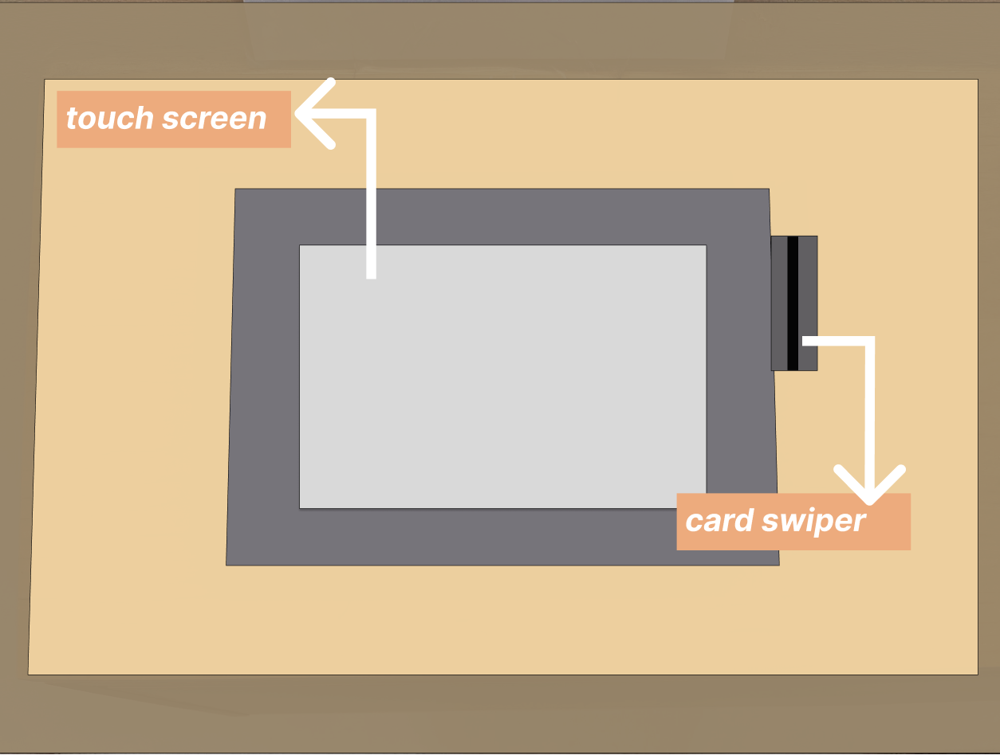
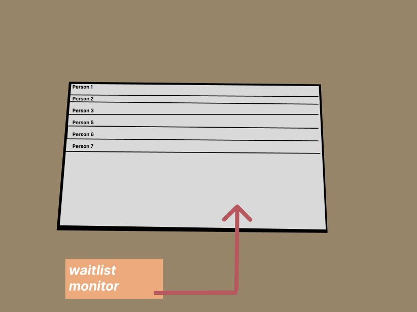
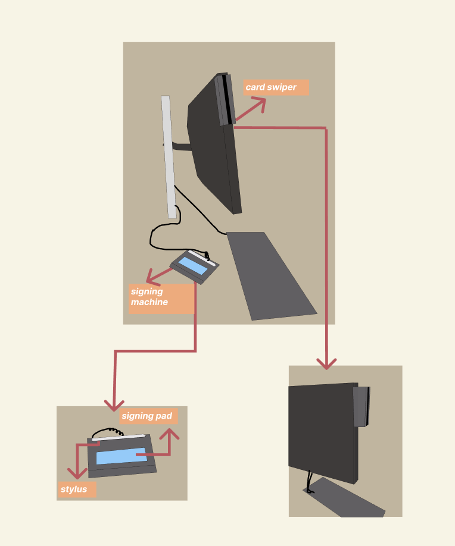

This project explores how students interact with Pagerob, my university’s mailroom system. By observing real users and conducting interviews, I identified key behaviors and challenges in the pickup process. From these insights, I developed two personas and storyboards that capture distinct user experiences, bringing their interactions with Pagerob to life.
Pagerob is an automated university mailroom system that allows students to pick up their packages in an organized queue system. The process involves:
There are 3 parts to this interface:
(1)
(2)
(3)
Person 1: Entered Pagerob at a relaxed pace, took her time at the kiosk, briefly checked the queue screen, and then got distracted by a conversation.
Person 2: Rushed into Pagerob, focused on her phone, avoiding eye contact. She swiped her ID multiple times at the kiosk without noticing the warning sign.
Person 3: Walked in with purpose, swiped his ID once, and took a moment to read the confirmation screen before continuing.
Users varied in their approach—some multitasked or got distracted while waiting, while others prioritized efficiency. Careful reading of instructions versus rushing through them affected how smoothly the process went.
(1) How did you first learn to use Pagerob? Was the process intuitive, or did you need help?
Person 1: “I think I just figured it out? I remember seeing people swipe their ID, so I did the same thing.”
Person 2: “I mean, it’s not that complicated. You swipe, you wait, they call you. I didn’t really think about it.”
Person 3: “I read the instructions on the screen the first time. It seemed pretty straightforward to me.”
(2) Can you walk me through your experience using Pagerob today?
Person 1: “Yeah, so I swiped my ID, clicked the button on the screen, and then went to wait. I saw my name on the screen, but I started talking to my friend, so I kind of stopped paying attention.”
Person 2: “I swiped my card—like, a few times, because nothing seemed to happen at first. Then I sat and waited. I was on my phone the whole time, so I just listened for my name.”
Person 3: “Swiped my ID, read the confirmation, checked the screen to see my place in line. I waited for a bit, and when my name popped up, I went up right away.”
(3) Did anything in the process take longer than expected or feel unclear?
Person 1: “Not really, I just didn’t realize my name was being called right away.”
Person 2: “Yeah, I guess I didn’t notice the thing about swiping once, so that pushed my name down or something? Kind of annoying.”
Person 3: “No, I mean, I wasn’t in a rush, but it seemed like a normal amount of time.”
(4) While waiting, did you find it easy to track your position in line?
Person 1: “I looked at it once, but I stopped paying attention. I just figured they’d call me when it was time.”
Person 2: “Didn’t check it. I just waited until I heard my name.”
Person 3: “Yeah, I kept an eye on it so I knew when I’d be up next.”
(5) Was there anything about the system that you had to think twice about?
Person 1: “I wasn’t sure if I was supposed to do anything after swiping my ID.”
Person 2: “I had no idea swiping more than once would mess up my place in line.”
Person 3: “Not really, I think it’s just about paying attention to what’s on the screen.”
(6) If you could improve one thing about Pagerob’s interface, what would it be?
Person 1: “A text notification when my name is called.”
Person 2: “A warning before my name gets moved down the list.”
Person 3: “I think it works fine as long as you follow the instructions.”